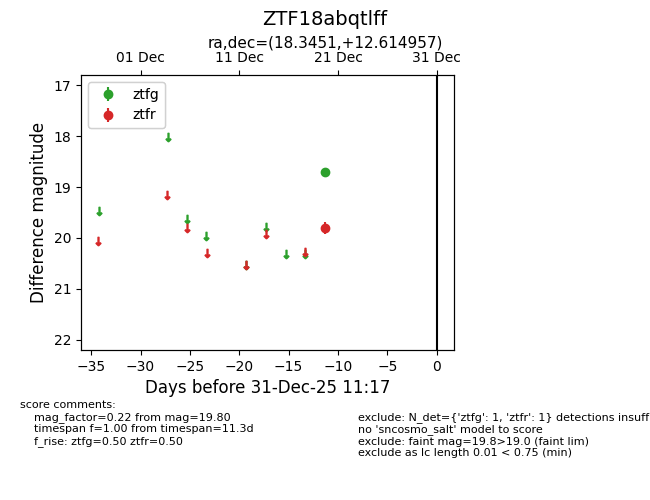
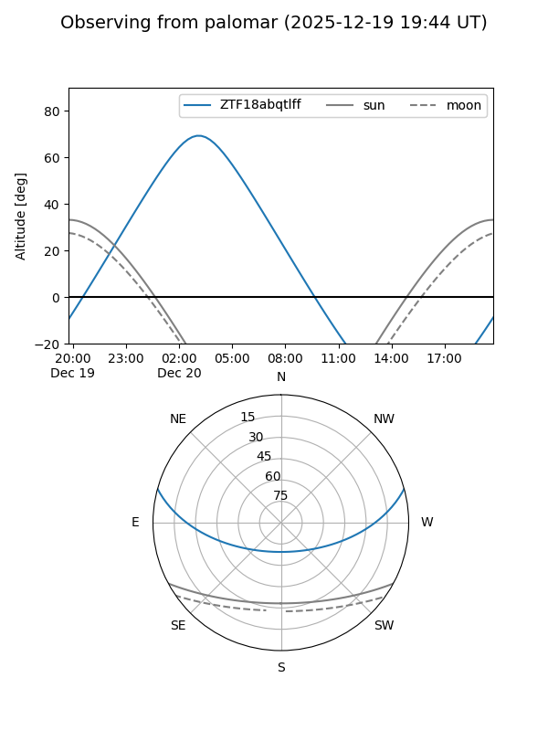

ZTF18abqtlff
Target ZTF18abqtlff at 2025-12-31 18:00
Aliases and brokers:
FINK: link
Lasair: link
ALeRCE: link
alt names
ZTF18abqtlff (ztf,fink_ztf)
Coordinates:
equatorial (ra, dec) = 18.3451,+12.61496
equatorial (HMS+DMS) = 01:13:22.83,+12:36:53.84
galactic (l, b) = (131.2596,-49.90166)
Flags:
Photometry:
last ztfg=18.71, ztfr=19.80
1 ztfg, 1 ztfr detections
Lightcurve

Visibility


Additional plots